Last updated: 2022-09-12
Checks: 5 2
Knit directory: 20211209_JingxinRNAseq/analysis/
This reproducible R Markdown analysis was created with workflowr (version 1.6.2). The Checks tab describes the reproducibility checks that were applied when the results were created. The Past versions tab lists the development history.
The R Markdown is untracked by Git. To know which version of the R Markdown file created these results, you’ll want to first commit it to the Git repo. If you’re still working on the analysis, you can ignore this warning. When you’re finished, you can run wflow_publish to commit the R Markdown file and build the HTML.
Great job! The global environment was empty. Objects defined in the global environment can affect the analysis in your R Markdown file in unknown ways. For reproduciblity it’s best to always run the code in an empty environment.
The command set.seed(19900924) was run prior to running the code in the R Markdown file. Setting a seed ensures that any results that rely on randomness, e.g. subsampling or permutations, are reproducible.
Great job! Recording the operating system, R version, and package versions is critical for reproducibility.
Nice! There were no cached chunks for this analysis, so you can be confident that you successfully produced the results during this run.
Using absolute paths to the files within your workflowr project makes it difficult for you and others to run your code on a different machine. Change the absolute path(s) below to the suggested relative path(s) to make your code more reproducible.
| absolute | relative |
|---|---|
| /project2/yangili1/bjf79/20211209_JingxinRNAseq/code/bigwigs/unstranded/(.+?).bw | ../code/bigwigs/unstranded/(.+?).bw |
Great! You are using Git for version control. Tracking code development and connecting the code version to the results is critical for reproducibility.
The results in this page were generated with repository version 053fca1. See the Past versions tab to see a history of the changes made to the R Markdown and HTML files.
Note that you need to be careful to ensure that all relevant files for the analysis have been committed to Git prior to generating the results (you can use wflow_publish or wflow_git_commit). workflowr only checks the R Markdown file, but you know if there are other scripts or data files that it depends on. Below is the status of the Git repository when the results were generated:
Ignored files:
Ignored: .DS_Store
Ignored: .Rhistory
Ignored: .Rproj.user/
Ignored: ._.DS_Store
Ignored: analysis/.RData
Ignored: analysis/.Rhistory
Ignored: analysis/20220707_TitrationSeries_DE_testing.nb.html
Ignored: analysis/figure/
Ignored: code/.DS_Store
Ignored: code/._.DS_Store
Ignored: code/._DOCK7.pdf
Ignored: code/._DOCK7_DMSO1.pdf
Ignored: code/._DOCK7_SM2_1.pdf
Ignored: code/._FKTN_DMSO_1.pdf
Ignored: code/._FKTN_SM2_1.pdf
Ignored: code/._MAPT.pdf
Ignored: code/._PKD1_DMSO_1.pdf
Ignored: code/._PKD1_SM2_1.pdf
Ignored: code/.snakemake/
Ignored: code/5ssSeqs.tab
Ignored: code/Alignments/
Ignored: code/ChemCLIP/
Ignored: code/ClinVar/
Ignored: code/DE_testing/
Ignored: code/DE_tests.mat.counts.gz
Ignored: code/DE_tests.txt.gz
Ignored: code/Fastq/
Ignored: code/FastqFastp/
Ignored: code/FragLenths/
Ignored: code/Meme/
Ignored: code/Multiqc/
Ignored: code/OMIM/
Ignored: code/OldBigWigs/
Ignored: code/QC/
Ignored: code/Session.vim
Ignored: code/SplicingAnalysis/
Ignored: code/TracksSession
Ignored: code/bigwigs/
Ignored: code/featureCounts/
Ignored: code/geena/
Ignored: code/igv_session.template.xml
Ignored: code/igv_session.xml
Ignored: code/log
Ignored: code/logs/
Ignored: code/scratch/
Ignored: code/test.txt.gz
Ignored: code/testPlottingWithMyScript.ForJingxin.sh
Ignored: code/testPlottingWithMyScript.ForJingxin2.sh
Ignored: code/testPlottingWithMyScript.ForJingxin3.sh
Ignored: code/testPlottingWithMyScript.ForJingxin4.sh
Ignored: code/testPlottingWithMyScript.sh
Ignored: data/._Hijikata_TableS1_41598_2017_8902_MOESM2_ESM.xls
Ignored: data/._Hijikata_TableS2_41598_2017_8902_MOESM3_ESM.xls
Ignored: output/._PioritizedIntronTargets.pdf
Untracked files:
Untracked: analysis/20220908_IdentifyTargetsForVerification2.Rmd
Unstaged changes:
Modified: analysis/20220804_MakeBigwigListTsv.Rmd
Modified: code/scripts/GenometracksByGenotype
Note that any generated files, e.g. HTML, png, CSS, etc., are not included in this status report because it is ok for generated content to have uncommitted changes.
There are no past versions. Publish this analysis with wflow_publish() to start tracking its development.
Yang shared with me a message from Jingxin:
- We are now designing lots of splicing assays. Previously, Ben provided 9 genes that are related to pathogenic gain-of-function mutations. I believe the analysis is based on our previous fibroblast result. We will need the coordinates of the AS events in these 9 genes. I hope that this can be done before next Tuesday (our next order for DNAs). 1 AKT3 MEGALENCEPHALY-POLYMICROGYRIA-POLYDACTYLY-HYDROCEPHALUS SYNDROME … 2 ACVR1 FIBRODYSPLASIA OSSIFICANS PROGRESSIVA; FOP
3 STAT1 IMMUNODEFICIENCY 31C; IMD31C
4 PDGFRB MYOFIBROMATOSIS, INFANTILE, 1; IMF1
5 RNF170 ATAXIA, SENSORY, 1, AUTOSOMAL DOMINANT; SNAX1
6 PTDSS1 LENZ-MAJEWSKI HYPEROSTOTIC DWARFISM; LMHD
7 KITLG HYPERPIGMENTATION WITH OR WITHOUT HYPOPIGMENTATION, FAMILIAL PROG… 8 PIEZO1 DEHYDRATED HEREDITARY STOMATOCYTOSIS 1 WITH OR WITHOUT PSEUDOHYPE… 9 SNTA1 LONG QT SYNDROME 12; LQT12
- The most intriguing part of the dose-response (DR) study is the selectivity difference between risdiplam and branaplam. Due to the similarity between risdiplam and C2-C5-1, we can even leave C2-C5-1 out for simplicity. We need a list of more genes that are (a) risdiplam selective and (b) branaplam selective, with complete coordinates. The criteria I can think of are as follows:
- Number of validated reads (leave the low-quality DR curves out).
- EC50 difference. This can be defined by delta Psi at a certain concentration (or an average of a few concentrations).
- Only consider exon inclusion in the presence of drugs.
Here I’ll address #2. Previously, based on the LCL dose-response data, I identified branaplam specific introns just by the loading of PC2 on a PCA analysis, as this PC seemed to distinguish branaplam-specific from C2C5/risdiplam-specific effects. I’ll do something similarly ad hoc, and incorporating some of Jingxin’s suggestions, to come up with a list of intron coordiantes worth cloning…
#load libraries
library(tidyverse)
library(edgeR)
library(gplots)
library(GenomicRanges)
library(drc)
library(broom)
library(GGally)
#Read in sample metadata
sample.list <- read_tsv("../code/bigwigs/BigwigList.tsv",
col_names = c("SampleName", "bigwig", "group", "strand")) %>%
filter(strand==".") %>%
mutate(old.sample.name = str_replace(bigwig, "/project2/yangili1/bjf79/20211209_JingxinRNAseq/code/bigwigs/unstranded/(.+?).bw", "\\1")) %>%
separate(SampleName, into=c("treatment", "dose.nM", "cell.type", "libType", "rep"), convert=T, remove=F, sep="_") %>%
left_join(
read_tsv("../code/bigwigs/BigwigList.groups.tsv", col_names = c("group", "color", "bed", "supergroup")),
by="group"
)
# Read in list of introns detected across all experiments that pass leafcutter's default clustering processing thresholds
all.samples.5ss <- read_tsv("../code/SplicingAnalysis/FullSpliceSiteAnnotations/JuncfilesMerged.annotated.basic.bed.5ss.tab.gz", col_names = c("intron", "seq", "score")) %>%
mutate(intron = str_replace(intron, "^(.+?)::.+$", "\\1")) %>%
separate(intron, into=c("chrom", "start", "stop", "strand"), sep="_", convert=T, remove=F)
all.samples.intron.annotations <- read_tsv("../code/SplicingAnalysis/FullSpliceSiteAnnotations/JuncfilesMerged.annotated.basic.bed.gz")
all.samples.PSI <- read_tsv("../code/SplicingAnalysis/leafcutter_all_samples/PSI.table.bed.gz")Let’s subset the splice junction count table for junctions reasonably expressed junctions in the LCL data and are GA|GT introns, then recreate the PCA where I expect PC2 to separate branaplam vs risdiplma/C2C5 samples.
First, out of curiosity, I will do this PCA with the chRNA LCL samples and the polyA dose-response LCL samples. I’ll color points by treatment and dose (purple=C2C5, blue=risdiplam, green=branaplam, LighterColors=LighterDoses)
splicing.gagt.df <- all.samples.PSI %>%
dplyr::select(-contains("fibroblast")) %>%
drop_na() %>%
inner_join(all.samples.5ss, by=c("#Chrom"="chrom", "start", "end"="stop", "strand")) %>%
inner_join(all.samples.intron.annotations, by=c("#Chrom"="chrom", "start", "end", "strand") ) %>%
filter(str_detect(seq, "^\\w{2}GAGT"))
#Verify correlation coefficients are reasonable.
#For splicing, perhaps average spearman > 0.7 is reasoable.
splicing.gagt.df %>%
dplyr::select(junc, contains("LCL")) %>%
column_to_rownames("junc") %>% as.matrix() %>% cor(method='spearman') %>%
heatmap.2(trace='none')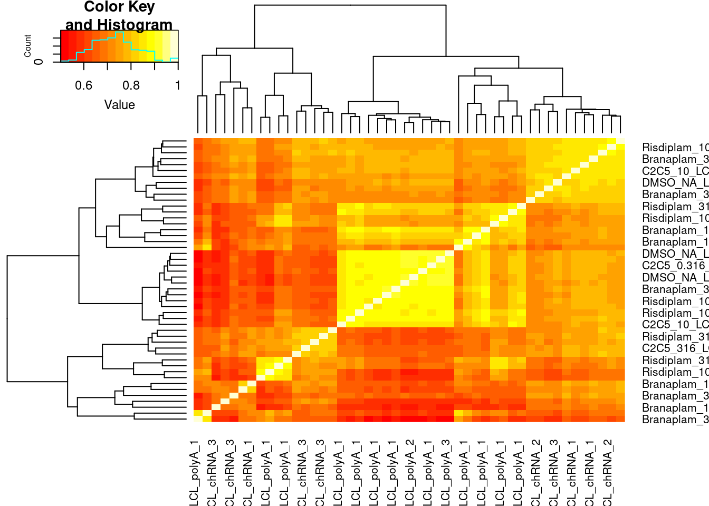
pca.results.splicing <- splicing.gagt.df %>%
dplyr::select(junc, contains("LCL")) %>%
column_to_rownames("junc") %>% as.matrix() %>%
scale() %>%
t() %>% prcomp()
PC.dat <- pca.results.splicing$x %>%
as.data.frame() %>%
rownames_to_column("SampleName") %>%
dplyr::select(SampleName, PC1, PC2, PC3) %>%
left_join(sample.list, by="SampleName")
ggplot(PC.dat, aes(x=PC1, y=PC2, color=color)) +
geom_point(aes(shape=libType)) +
scale_color_identity() +
theme_bw() +
labs(title = "PCA using 678 GA|GT spliced introns")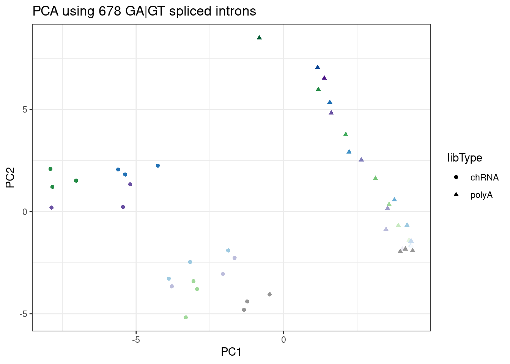
ggplot(PC.dat, aes(x=PC2, y=PC3, color=color)) +
geom_point(aes(shape=libType)) +
scale_color_identity() +
theme_bw() +
labs(title = "PCA using 678 GA|GT spliced introns")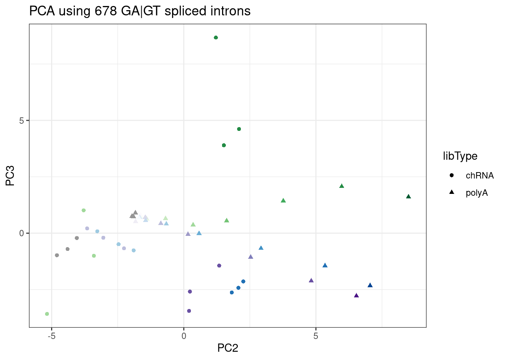
Ok, here the first 2 PCs are a mix of effects that correlate with RNA type (chRNA vs polyA), and dose. I think this in itself is sort of noteworthy, and could be thought of as consistent with chRNA bringing out stronger effects that might otherwise only be seen with higher doses. PC3 seems to separate branaplam versus risdiplam. The separation is still good enough, in my opinion, to use as an ad-hoc way to distinguish branaplam versus risdiplam/C2C5 effects.
Let’s try redoing that PCA without the chRNA-seq data, just out of curiosity…
splicing.gagt.df <- all.samples.PSI %>%
dplyr::select(-contains("fibroblast")) %>%
dplyr::select(-contains("chRNA")) %>%
drop_na() %>%
inner_join(all.samples.5ss, by=c("#Chrom"="chrom", "start", "end"="stop", "strand")) %>%
inner_join(all.samples.intron.annotations, by=c("#Chrom"="chrom", "start", "end", "strand") ) %>%
filter(str_detect(seq, "^\\w{2}GAGT"))
#Verify correlation coefficients are reasonable.
#For splicing, perhaps average spearman > 0.7 is reasoable.
splicing.gagt.df %>%
dplyr::select(junc, contains("LCL")) %>%
column_to_rownames("junc") %>% as.matrix() %>% cor(method='spearman') %>%
heatmap.2(trace='none')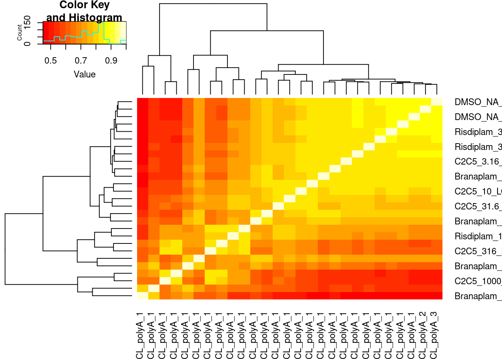
pca.results.splicing <- splicing.gagt.df %>%
dplyr::select(junc, contains("LCL")) %>%
column_to_rownames("junc") %>% as.matrix() %>%
scale() %>%
t() %>% prcomp()
PC.dat <- pca.results.splicing$x %>%
as.data.frame() %>%
rownames_to_column("SampleName") %>%
dplyr::select(SampleName, PC1, PC2, PC3) %>%
left_join(sample.list, by="SampleName")
ggplot(PC.dat, aes(x=PC1, y=PC2, color=color)) +
geom_point(aes(shape=libType)) +
scale_color_identity() +
theme_bw() +
labs(title = "PCA using 3,479 GA|GT spliced introns")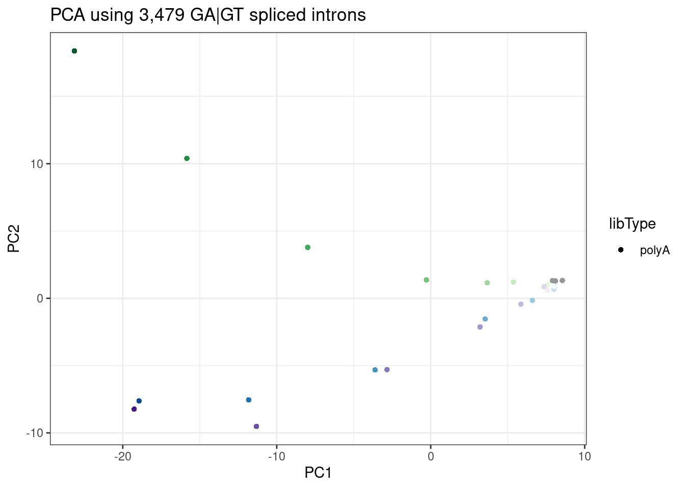
ggplot(PC.dat, aes(x=PC2, y=PC3, color=color)) +
geom_point(aes(shape=libType)) +
scale_color_identity() +
theme_bw() +
labs(title = "PCA using 3,479 GA|GT spliced introns")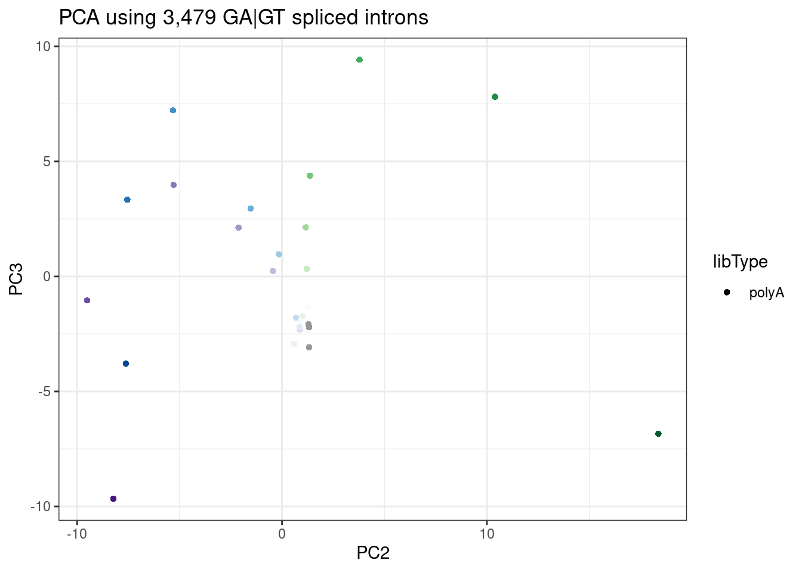
In this PCA, I used more GA|GT introns, since my filtering for presence of within-cluster junctions across all samples does keeps more junctions if I limit samples to the polyA data. Here the dose correlates with PC1, and the branaplam-specific-effect with PC2.
Let’s continue with this PCA results to quickly identify the branaplam-specific effects. Let’s further filter by a reliable dose-response effect with splicing that goes up with higher dose, and also filter specifically for cassette exons. Here is how I will go about that:
First step: identifying GA|GT introns that have a nearby upstream splice acceptor:
MaxCassetteExonLen <- 300
splicing.gagt.donors.granges <- splicing.gagt.df %>%
dplyr::select(chrom=`#Chrom`, intron.start=start, intron.end=end, strand) %>%
mutate(start = case_when(
strand == "+" ~ intron.start,
strand == "-" ~ intron.end -2
)) %>%
mutate(end = start +2) %>%
dplyr::select(chrom, start, end, strand) %>%
distinct() %>%
add_row(chrom="DUMMY", start=0, end=1, strand="+", .before=1) %>%
makeGRangesFromDataFrame()
splicing.acceptors.granges <- all.samples.PSI %>%
dplyr::select(1:6) %>%
filter(gid %in% splicing.gagt.df$gid) %>%
filter(!junc %in% splicing.gagt.df$junc) %>%
dplyr::select(chrom=`#Chrom`, intron.start=start, intron.end=end, strand) %>%
mutate(start = case_when(
strand == "+" ~ intron.end -2,
strand == "-" ~ intron.start -2
)) %>%
mutate(end = start +2) %>%
dplyr::select(chrom, start, end, strand) %>%
distinct() %>%
makeGRangesFromDataFrame()
PrecedingIndexes <- GenomicRanges::follow(splicing.gagt.donors.granges, splicing.acceptors.granges, select="last") %>%
replace_na(1)
UpstreamAcceptors.df <- cbind(
splicing.gagt.donors.granges %>% as.data.frame() %>%
dplyr::rename(chrom=1, start=2, end=3, width=4, strand=5),
splicing.acceptors.granges[PrecedingIndexes] %>% as.data.frame() %>%
dplyr::rename(chrom.preceding=1, start.preceding=2, end.preceding=3, width.preceding=4, strand.preceding=5)
) %>%
filter(as.character(chrom) == as.character(chrom.preceding)) %>%
filter((strand=="+" & start - end.preceding < MaxCassetteExonLen) | (strand=="-" & start.preceding - end < MaxCassetteExonLen)) %>%
mutate(SpliceDonor = case_when(
strand == "+" ~ paste(chrom, start, strand, sep="."),
strand == "-" ~ paste(chrom, end, strand, sep=".")
)) %>%
mutate(UpstreamSpliceAcceptor = case_when(
strand == "+" ~ paste(chrom, end.preceding, strand, sep="."),
strand == "-" ~ paste(chrom, start.preceding, strand, sep=".")
)) %>%
dplyr::select(SpliceDonor, UpstreamSpliceAcceptor)
splicing.gagt.cassette.exons <- splicing.gagt.df %>%
mutate(SpliceDonor = case_when(
strand == "+" ~ paste(`#Chrom`, start, strand, sep="."),
strand == "-" ~ paste(`#Chrom`, end, strand, sep=".")
)) %>%
inner_join(UpstreamAcceptors.df, by="SpliceDonor") %>%
mutate(IntronType = recode(anchor, A="Alt 5'ss", D="Alt 3'ss", DA="Annotated", N="New Intron", NDA="New Splice Site combination"))Now that I’ve filtered for GA|GT introns with a preceding splice accepter, let’s plot the fraction of each IntronType AS classification, and compare to all GA|GT introns, and to all juncs as well…
all.samples.PSI %>%
inner_join(all.samples.5ss, by=c("#Chrom"="chrom", "start", "end"="stop", "strand")) %>%
inner_join(all.samples.intron.annotations, by=c("#Chrom"="chrom", "start", "end", "strand") ) %>%
dplyr::select(junc, anchor, seq) %>%
mutate(IntronType = recode(anchor, A="Alt 5'ss", D="Alt 3'ss", DA="Annotated", N="New Intron", NDA="New Splice Site combination")) %>%
mutate(Set = case_when(
junc %in% splicing.gagt.cassette.exons$junc ~ "GA|GT in my cassette exon set",
str_detect(seq, "^\\w{2}GAGT") ~ "GA|GT not in my cassette exon set",
TRUE ~ "Not GA|GT"
)) %>%
ggplot(aes(x=Set, fill=IntronType)) +
geom_bar(position="fill") +
theme_bw() +
theme(axis.text.x = element_text(angle = 45, vjust = 1, hjust=1)) +
labs(x="Fraction each AS type", title="My GA|GT intron set involved in\ncassette exons is mostly cryptic 5'ss")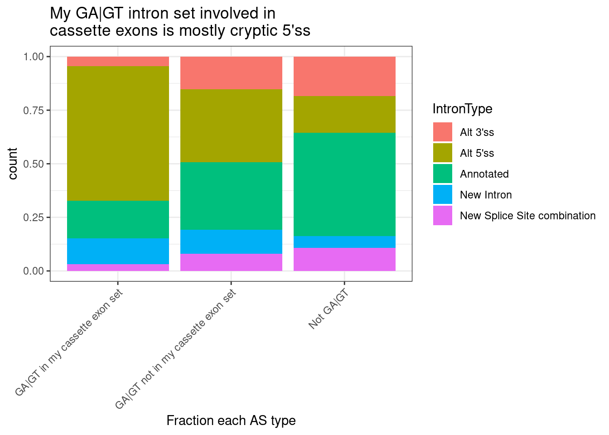
Now the second step… model fitting…
But before model fitting, let’s get a feel for what the data looks like…
let’s first plot the dose response points for a random sample of introns…
splicing.gagt.cassette.exons %>%
dplyr::select(junc, contains("LCL")) %>%
sample_n(30) %>%
gather("SampleName", "PSI", -junc) %>%
left_join(sample.list, by="SampleName") %>%
ggplot(aes(x=dose.nM, y=PSI, color=treatment)) +
geom_line() +
scale_x_continuous(trans="log10") +
facet_wrap(~junc, scales = "free_y") +
theme_bw()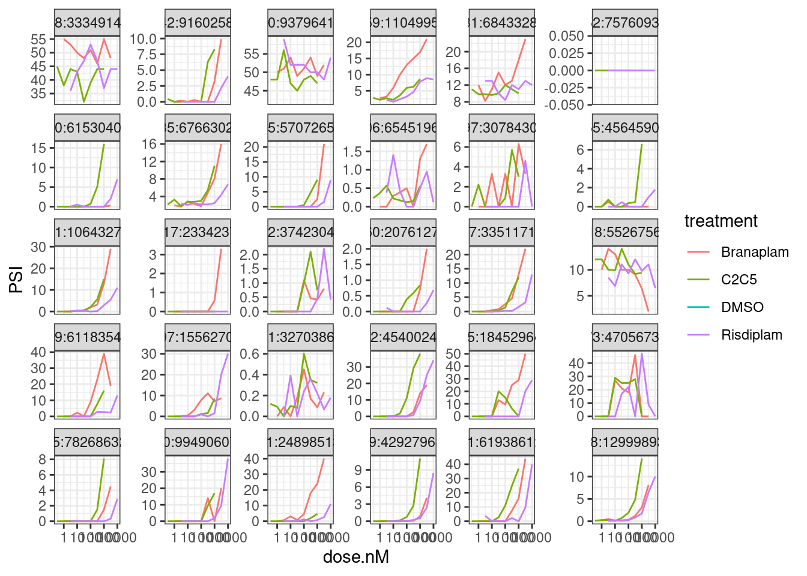
Reassuringly, most all dose-response slopes for GA|GT introns are positive. There a few that look too noisy to model, but maybe we can just model them all and filter those noisy ones after fitting the model…
On second thought, before fitting models, let’s just see if plotting the top introns by PC2 loading already does a good job at filtering out the noisy introns…
Here are the top 30 introns by PC2 loading
pca.results.splicing$rotation %>%
as.data.frame() %>%
dplyr::select(PC2) %>%
rownames_to_column("junc") %>%
inner_join(splicing.gagt.cassette.exons) %>%
dplyr::select(junc, PC2, contains("LCL")) %>%
arrange(desc(PC2)) %>%
head(30) %>%
gather("SampleName", "PSI", -junc, -PC2) %>%
left_join(sample.list, by="SampleName") %>%
ggplot(aes(x=dose.nM, y=PSI, color=treatment)) +
geom_line() +
scale_x_continuous(trans="log10") +
facet_wrap(~junc, scales = "free_y") +
theme_bw()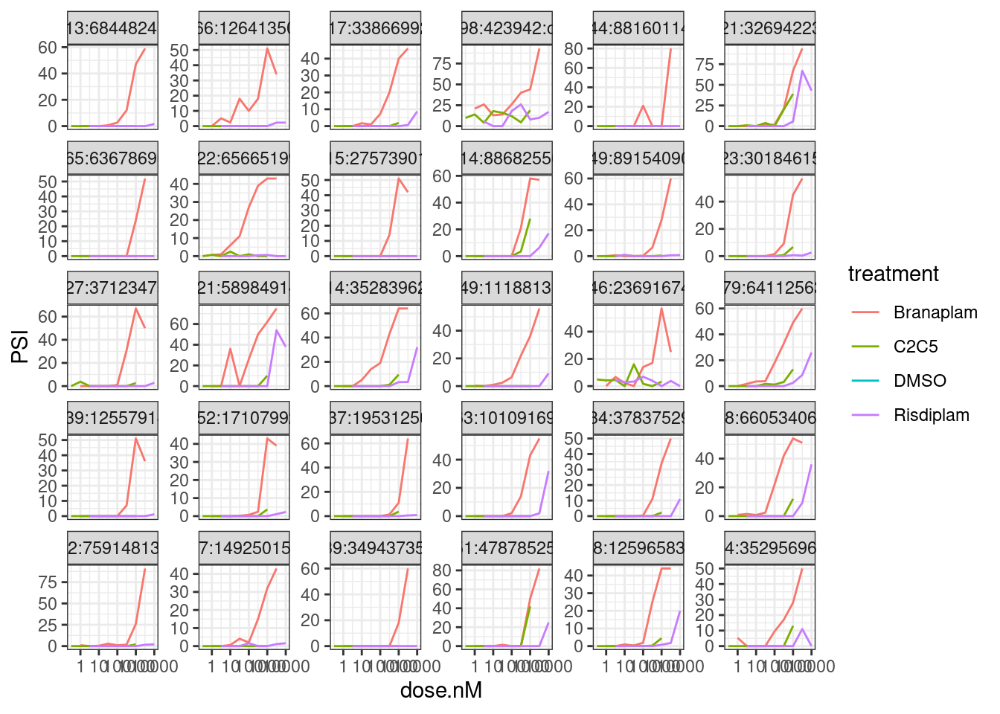
Bottom30 by PC2 loading…
pca.results.splicing$rotation %>%
as.data.frame() %>%
dplyr::select(PC2) %>%
rownames_to_column("junc") %>%
inner_join(splicing.gagt.cassette.exons) %>%
dplyr::select(junc, PC2, contains("LCL")) %>%
arrange(PC2) %>%
head(30) %>%
gather("SampleName", "PSI", -junc, -PC2) %>%
left_join(sample.list, by="SampleName") %>%
ggplot(aes(x=dose.nM, y=PSI, color=treatment)) +
geom_line() +
scale_x_continuous(trans="log10") +
facet_wrap(~junc, scales = "free_y") +
theme_bw()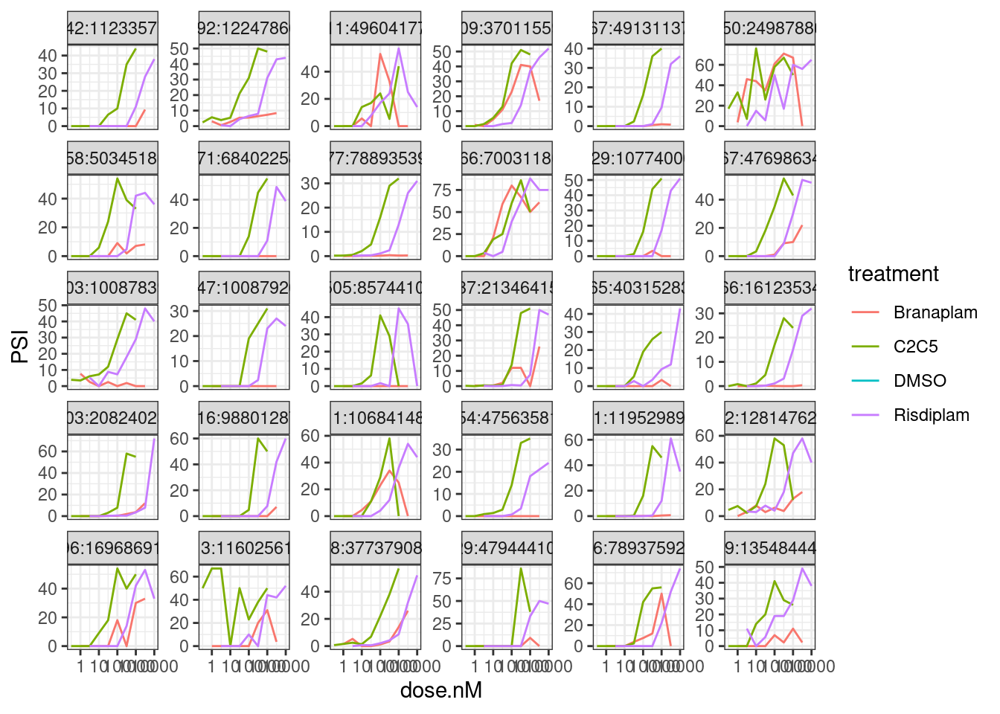
Hmmm, I think it may still be worthwhile fitting a model as an additional critera…
Before model fitting, let’s also do something simple: calculate the spearman correlation coefficient across dose and PSI for each intron:treatment combination… I expect the correlation to be generally positive since GA|GT introns increase with dosage… Will branaplam have more introns with positive coefficient?
Small note on this analysis: I will include the DMSO data… There are 3 replicates of DMSO. I will randomly assign 1 DMSO sample for each titration series. I will actually do this on a per-junctino level, so it’s not like branaplam titration series is always paired with the same DMSO replicate… Rather, it will vary randomly by junction.
dmso.data <- splicing.gagt.cassette.exons %>%
dplyr::select(junc, contains("LCL")) %>%
gather("SampleName", "PSI", -junc) %>%
left_join(sample.list, by="SampleName") %>%
filter(treatment=="DMSO") %>%
arrange(junc, rep) %>%
mutate(dose.nM = 0)
dmso.data$treatment <- replicate(nrow(dmso.data)/3, sample(c("Branaplam", "Risdiplam", "C2C5"), 3)) %>% as.vector()
spearman.tests <- splicing.gagt.cassette.exons %>%
dplyr::select(junc, IntronType, contains("LCL")) %>%
gather("SampleName", "PSI", -junc, -IntronType) %>%
left_join(sample.list, by="SampleName") %>%
bind_rows(dmso.data) %>%
filter(!treatment=="DMSO") %>%
nest(-treatment, -junc) %>%
mutate(cor=map(data,~cor.test(.x$dose.nM, .x$PSI, method = "sp"))) %>%
mutate(tidied = map(cor, tidy)) %>%
unnest(tidied, .drop = T)
spearman.tests %>%
unnest(data) %>%
distinct(junc, treatment, .keep_all=T) %>%
ggplot(aes(x=estimate, color=treatment)) +
stat_ecdf() +
theme_bw() +
labs(title="Distribution of dose vs PSI spearman correlation coef, by AS type", y="ecdf", x="spearmen coef", caption="Only GA|GT introns included") +
facet_wrap(~IntronType)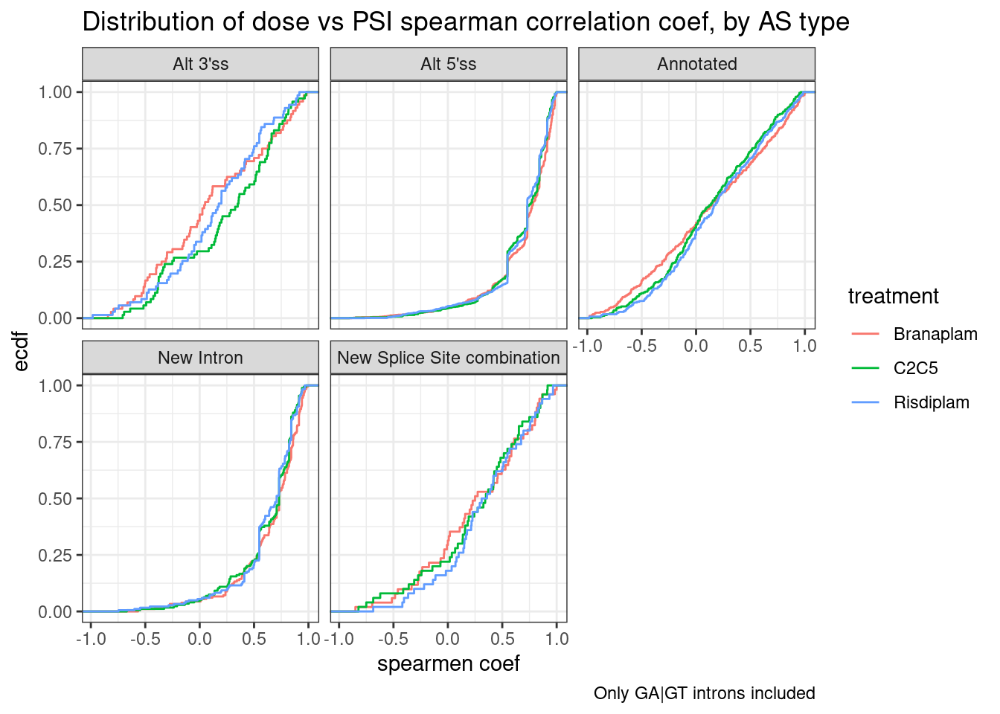
Ok, from this it isn’t clear to me that branaplam or risdiplam effect a hugely different number of GA|GT introns genome-wide. It is also clear that the alt 5’ss and NewIntron (which contain a new splice site by definition) have the more positive spearman coef. Let’s plot the spearman coefficient results one additional way: as pairwise scatter plots, with each point being the correlation coefficient in two different treatments
Limits <- 1
diag_limitrange <- function(data, mapping, ...) {
ggplot(data = data, mapping = mapping, ...) +
geom_density(...) +
coord_cartesian(xlim=c(-Limits,Limits)) +
theme_bw()
}
upper_point <- function(data, mapping, ...) {
ggplot(data = data, mapping = mapping, ...) +
geom_point(..., alpha=0.05) +
scale_y_continuous(limits = c(-Limits, Limits)) +
scale_x_continuous(limits = c(-Limits, Limits)) +
geom_abline() +
theme_bw()
}
spearman.tests %>%
dplyr::select(junc, treatment, estimate) %>%
# group_by(junc) %>%
# filter(any(estimate>0.90)) %>%
# ungroup() %>%
pivot_wider(names_from = "treatment", values_from="estimate") %>%
ggpairs(
title="Spearman coef between dose and PSI",
columns = 2:4,
upper=list(continuous = wrap("cor", method = "spearman", hjust=0.7)),
lower=list(continuous = upper_point),
diag=list(continuous = diag_limitrange))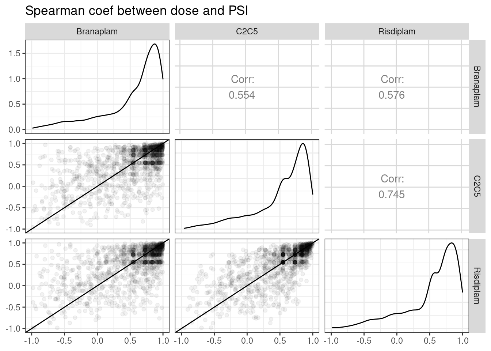
Again, it is not clear that branaplam affects any more introns genomewide than risdiplam, though again we see that C2C5 and risdiplam are more similar to each other than branaplam.
Let’s see plot some random dose-response curves and see if the spearman correlation coefficient seems like a reliable enough proxy for a ‘trustable’ dose-respone curve… Let’s replot the top30 and bottom30 by PC2 loading and also label the spearman coefficient… For these, I will further filter only for the alt 5’ss introns from within my set of GA|GT introns with an upstream splice accepter. I figure these are more what Jingxin is looking for when he clones things… (The “newIntrons” might represent more complex splicing that would require more thought to find the appropriate coordinates to clone)
pca.results.splicing$rotation %>%
as.data.frame() %>%
dplyr::select(PC2) %>%
rownames_to_column("junc") %>%
inner_join(splicing.gagt.cassette.exons) %>%
filter(IntronType == "Alt 5'ss") %>%
dplyr::select(junc, PC2, contains("LCL")) %>%
arrange(desc(PC2)) %>%
head(30) %>%
gather("SampleName", "PSI", -junc, -PC2) %>%
left_join(sample.list, by="SampleName") %>%
inner_join(spearman.tests, by=c("junc", "treatment")) %>%
ggplot(aes(color=treatment)) +
geom_label(
data = (. %>%
distinct(junc, treatment, estimate) %>%
group_by(junc) %>%
mutate(vjust = row_number()) %>%
ungroup()),
aes(vjust = vjust, label=signif(estimate,3)),
y=Inf, x=-Inf, size=2.5, hjust=-0.1, label.padding=unit(0.1, "lines")
) +
geom_line(aes(x=dose.nM, y=PSI)) +
scale_x_continuous(trans="log10") +
facet_wrap(~junc, scales = "free_y") +
labs(title="Top30 GA|GT introns by PC2") +
theme_bw()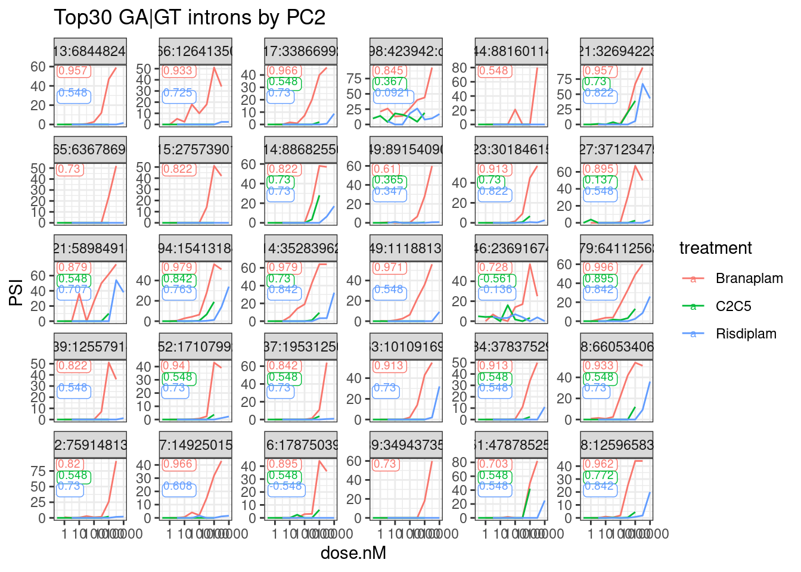
pca.results.splicing$rotation %>%
as.data.frame() %>%
dplyr::select(PC2) %>%
rownames_to_column("junc") %>%
inner_join(splicing.gagt.cassette.exons) %>%
filter(IntronType == "Alt 5'ss") %>%
dplyr::select(junc, PC2, contains("LCL")) %>%
arrange(PC2) %>%
head(30) %>%
gather("SampleName", "PSI", -junc, -PC2) %>%
left_join(sample.list, by="SampleName") %>%
inner_join(spearman.tests, by=c("junc", "treatment")) %>%
ggplot(aes(color=treatment)) +
geom_label(
data = (. %>%
distinct(junc, treatment, estimate) %>%
group_by(junc) %>%
mutate(vjust = row_number()) %>%
ungroup()),
aes(vjust = vjust, label=signif(estimate,3)),
y=Inf, x=-Inf, size=2.5, hjust=-0.1, label.padding=unit(0.1, "lines")
) +
geom_line(aes(x=dose.nM, y=PSI)) +
scale_x_continuous(trans="log10") +
facet_wrap(~junc, scales = "free_y") +
labs(title="Bottom30 GA|GT introns by PC2") +
theme_bw()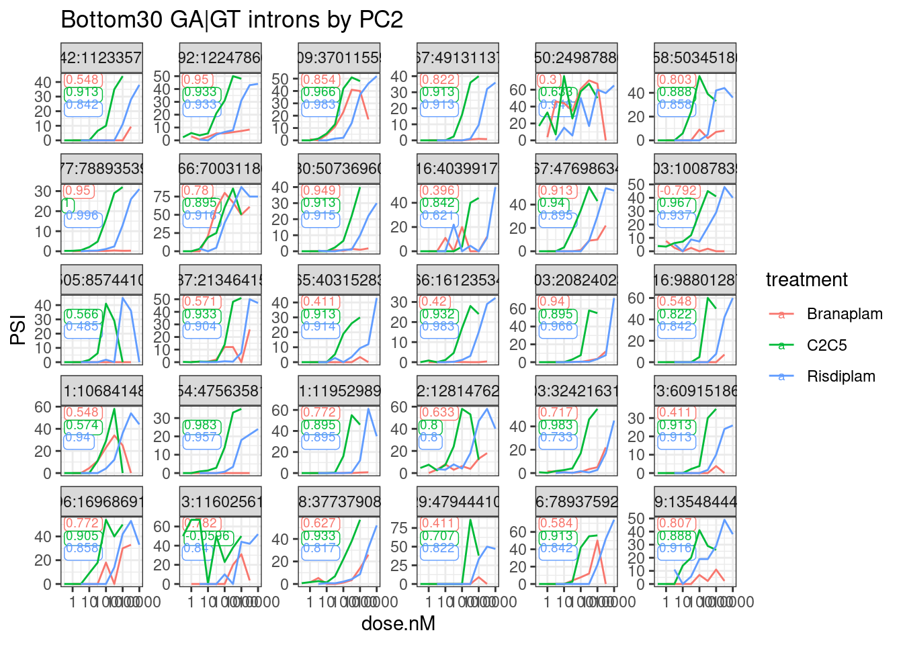
I think that seems good enough. The spearman coefficient seems like a simple and effective-enough way to filter out the poor dose-responses. Let’s try filtering for a spearman coefficient > 0.93 in at least one treatment… Then replot the top and bottom30.
pca.results.splicing$rotation %>%
as.data.frame() %>%
dplyr::select(PC2) %>%
rownames_to_column("junc") %>%
inner_join(splicing.gagt.cassette.exons) %>%
filter(IntronType == "Alt 5'ss") %>%
dplyr::select(junc, PC2) %>%
inner_join(spearman.tests, by="junc") %>%
group_by(junc) %>%
filter(any(estimate>0.90)) %>%
ungroup() %>%
arrange(desc(PC2), junc) %>%
head(30*3) %>%
unnest(data) %>%
ggplot(aes(color=treatment)) +
geom_label(
data = (. %>%
distinct(junc, treatment, estimate) %>%
group_by(junc) %>%
mutate(vjust = row_number()) %>%
ungroup()),
aes(vjust = vjust, label=signif(estimate,3)),
y=Inf, x=-Inf, size=2.5, hjust=-0.1, label.padding=unit(0.1, "lines")
) +
geom_line(aes(x=dose.nM, y=PSI)) +
scale_x_continuous(trans="log1p", limits=c(0, 10000), breaks=c(10000, 3160, 1000, 316, 100, 31.6, 10, 3.16, 1, 0.316, 0)) +
facet_wrap(~junc, scales = "free_y") +
labs(title="Top30 GA|GT introns by PC2") +
theme_bw() +
theme(axis.text.x = element_text(angle = 45, vjust = 1, hjust=1, size=3))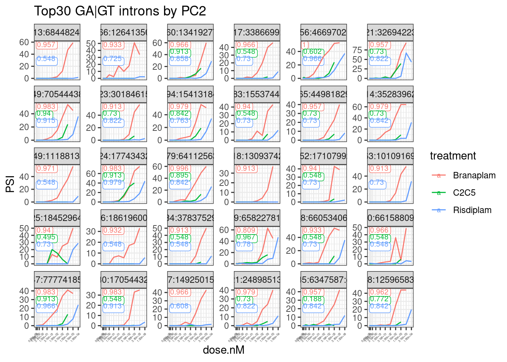
pca.results.splicing$rotation %>%
as.data.frame() %>%
dplyr::select(PC2) %>%
rownames_to_column("junc") %>%
inner_join(splicing.gagt.cassette.exons) %>%
filter(IntronType == "Alt 5'ss") %>%
dplyr::select(junc, PC2) %>%
inner_join(spearman.tests, by="junc") %>%
group_by(junc) %>%
filter(any(estimate>0.90)) %>%
ungroup() %>%
arrange(PC2, junc) %>%
head(30*3) %>%
unnest(data) %>%
ggplot(aes(color=treatment)) +
geom_label(
data = (. %>%
distinct(junc, treatment, estimate) %>%
group_by(junc) %>%
mutate(vjust = row_number()) %>%
ungroup()),
aes(vjust = vjust, label=signif(estimate,3)),
y=Inf, x=-Inf, size=2.5, hjust=-0.1, label.padding=unit(0.1, "lines")
) +
geom_line(aes(x=dose.nM, y=PSI)) +
scale_x_continuous(trans="log1p", limits=c(0, 10000), breaks=c(10000, 3160, 1000, 316, 100, 31.6, 10, 3.16, 1, 0.316, 0)) +
facet_wrap(~junc, scales = "free_y") +
labs(title="Bottom30 GA|GT introns by PC2") +
theme_bw() +
theme(axis.text.x = element_text(angle = 45, vjust = 1, hjust=1, size=3))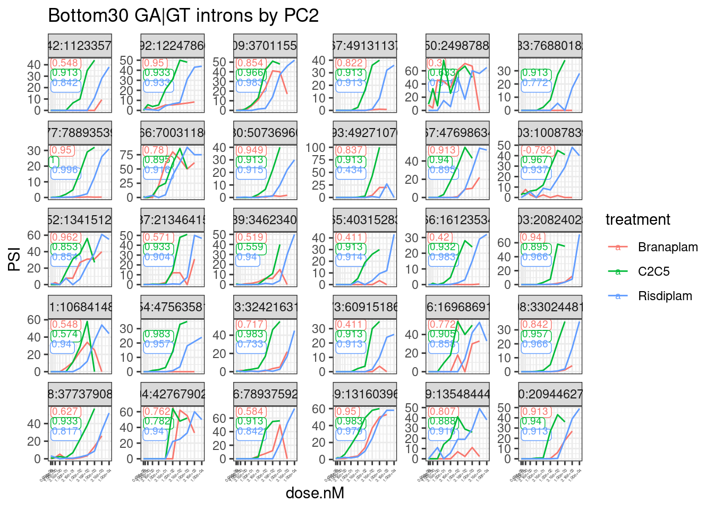
Ok, that looks generally good.
Let’s also look at these junctions in chRNA, comparing the same dose in chRNA vs poly-RNA-seq. I expect trustworthy junctions of interest to generally have higher PSI in chRNA, if in fact these cause NMD.
chRNA.Mean.PSI <- all.samples.PSI %>%
dplyr::select(junc, contains("chRNA")) %>%
gather("SampleName", "PSI", -junc) %>%
inner_join(
sample.list %>%
filter(libType == "chRNA") %>%
group_by(treatment) %>%
filter(dose.nM == max(dose.nM)) %>%
ungroup(),
by="SampleName") %>%
group_by(junc, treatment, dose.nM) %>%
summarise(Avg_chRNA_PSI = mean(PSI))
pca.results.splicing$rotation %>%
as.data.frame() %>%
dplyr::select(PC2) %>%
rownames_to_column("junc") %>%
inner_join(splicing.gagt.cassette.exons) %>%
dplyr::select(junc, PC2) %>%
inner_join(spearman.tests, by="junc") %>%
group_by(junc) %>%
filter(any(estimate>0.90)) %>%
ungroup() %>%
unnest(data) %>%
inner_join(chRNA.Mean.PSI, by=c("junc", "treatment", "dose.nM")) %>%
ggplot(aes(x=Avg_chRNA_PSI - PSI, color=IntronType)) +
stat_ecdf()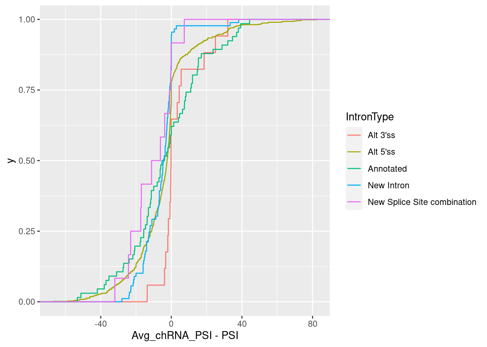
Even for the cryptic 5’ss subset, it is not clear that these junctions are more used (relative to the other introns in the leafcutter cluster) in chRNA.
Let’s try model fitting though. I think the output (eg a EC50 parameter for each drug) will be generally useful.
I will fit a standard log-logistic regression, with PSI as the response. This may not be perfect, as I’m not sure residuals will be perfectly normal, and PSI range is only [0-100], and those don’t necessarily fit the model assumptions… Nonetheless, it will be quick and easy for me to fit a model like that and it will still be helpful/useful. In fact, with the drm model fitting function, I can actually set limits on the the lower and upper limit paramters to be [0,100]. For simplicity, to to limit the likely parameter space of the model with our limited number of data points, I will jointly fit a model between all treatments for each junction, fixing the same upper and lower limit parameters to be the same across each treatment… I think I will also fix the same slope. I think given that the mechanisms underlying these small molecules is so similar, I think it this is reasonable, and will lower the complexity of the model to help prevent over-fitting. To demonstrate what I mean, look at the following model fits:
Allowing all 4 parameters to vary freely:
data.to.fit <- pca.results.splicing$rotation %>%
as.data.frame() %>%
dplyr::select(PC2) %>%
rownames_to_column("junc") %>%
inner_join(splicing.gagt.cassette.exons) %>%
dplyr::select(junc, PC2) %>%
inner_join(spearman.tests, by="junc") %>%
group_by(junc) %>%
filter(any(estimate>0.90)) %>%
ungroup() %>%
arrange(desc(PC2), junc) %>%
filter(row_number() > max(row_number()) - 300 | row_number() <= 300) %>%
unnest(data) %>%
filter(junc == "chr22:35267514:35283962:clu_38658_+")
fit <- data.to.fit %>%
drm(formula = PSI ~ dose.nM,treatment,
data = .,
# curveid = treatment,
fct = LL.4(names=c("Steepness", "LowerLimit", "UpperLimit", "ED50")),
pmodels=data.frame(treatment, treatment, treatment, treatment)
)
plot(fit)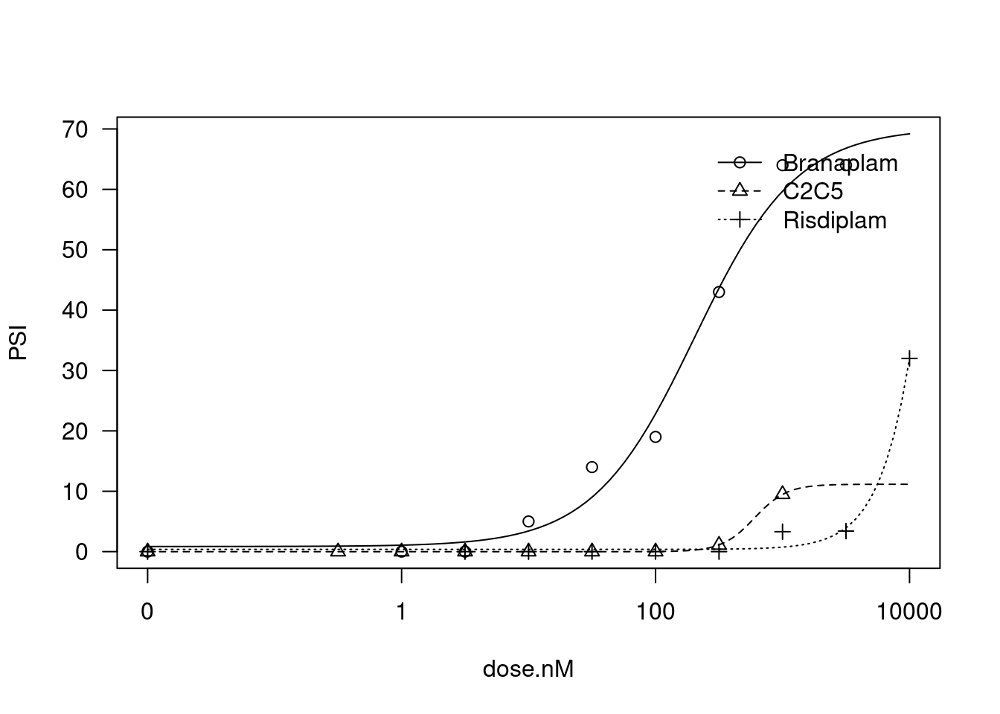
And now fixing the lowerLimit and UpperLimit parameter to be the same between treatments:
fit <- data.to.fit %>%
drm(formula = PSI ~ dose.nM,treatment,
data = .,
# curveid = treatment,
fct = LL.4(names=c("Steepness", "LowerLimit", "UpperLimit", "ED50")),
pmodels=data.frame(treatment, 1, 1, treatment)
)
plot(fit)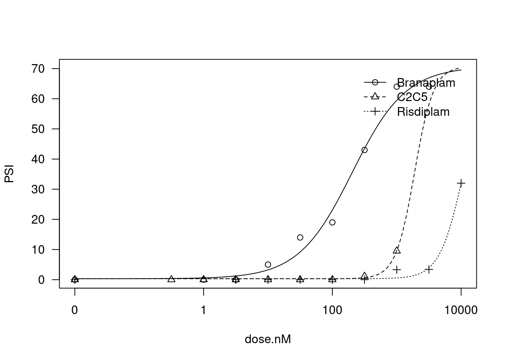
And now fixing the lowerlLimit, the upperLimit, and the slope to be the same between treatments… That is, the models are all parellel, and only the EC50 parameter may vary between treatments…
fit <- data.to.fit %>%
drm(formula = PSI ~ dose.nM,treatment,
data = .,
# curveid = treatment,
fct = LL.4(names=c("Steepness", "LowerLimit", "UpperLimit", "ED50")),
pmodels=data.frame(1, 1, 1, treatment)
)
plot(fit)For sake of computational time, let’s just even attempt to fit a model to the top100 and bottom100 GA|GT introns by PC2 among those with a spearman coefficient > 0.9 in at least one treatment, and among those that may be involved in cassette exons (nearby a upstream splice donor) and also cryptic 5’ss.
… For model fitting, this code doesn’t work but I want to document it because it could be a useful starting point for more carefully doing this stuff later.
# had to use possibly wrapper function to handle errors, like when drm fitting does not converge
safe_drm <- safely(drm, otherwise=NA)
possibly_drm <- possibly(drm, otherwise=NA)
quitely_drm <- quietly(drm)
model.results.df <- pca.results.splicing$rotation %>%
as.data.frame() %>%
dplyr::select(PC2) %>%
rownames_to_column("junc") %>%
inner_join(splicing.gagt.cassette.exons) %>%
dplyr::select(junc, PC2) %>%
inner_join(spearman.tests, by="junc") %>%
group_by(junc) %>%
filter(any(estimate>0.90)) %>%
ungroup() %>%
arrange(desc(PC2), junc) %>%
filter(row_number() > max(row_number()) - 300 | row_number() <= 300) %>%
unnest(data) %>%
# filter(junc %in% c("chr22:35267514:35283962:clu_38658_+", "chr10:68446413:68448247:clu_20590_-")) %>%
# filter(junc %in% c("chr22:35267514:35283962:clu_38658_+")) %>%
group_by(junc) %>%
filter(all(!is.na(PSI))) %>%
filter(all(!is.na(dose.nM))) %>%
filter(all(!is.na(treatment))) %>%
ungroup() %>%
group_by(junc, treatment) %>%
nest(-junc) %>%
mutate(model = map(data, ~drm(formula = PSI ~ dose.nM,treatment,
data = .,
fct = LL.4(names=c("Steepness", "LowerLimit", "UpperLimit", "ED50")),
pmodels=data.frame(treatment, 1, 1, treatment)
)))
# filter out the wrapper functions that returned list with NA
# filter(!anyNA(model))
model.results.df %>%
mutate(results = map(model, tidy)) %>%
unnest(results) %>%
mutate(summary = map(model, glance)) %>%
unnest(summary)
fit <- pca.results.splicing$rotation %>%
as.data.frame() %>%
dplyr::select(PC2) %>%
rownames_to_column("junc") %>%
inner_join(splicing.gagt.cassette.exons) %>%
dplyr::select(junc, PC2) %>%
inner_join(spearman.tests, by="junc") %>%
group_by(junc) %>%
filter(any(estimate>0.90)) %>%
ungroup() %>%
arrange(desc(PC2), junc) %>%
filter(row_number() > max(row_number()) - 300 | row_number() <= 300) %>%
unnest(data) %>%
filter(junc == "chr22:35267514:35283962:clu_38658_+") %>%
drm(formula = PSI ~ dose.nM,treatment,
data = .,
# curveid = treatment,
fct = LL.4(names=c("Steepness", "LowerLimit", "UpperLimit", "ED50")),
pmodels=data.frame(treatment, 1, 1, treatment)
)
plot(fit)
summary(fit)
mselect(fit)
model.dat.df <- pca.results.splicing$rotation %>%
as.data.frame() %>%
dplyr::select(PC2) %>%
rownames_to_column("junc") %>%
inner_join(splicing.gagt.cassette.exons) %>%
dplyr::select(junc, PC2) %>%
inner_join(spearman.tests, by="junc") %>%
group_by(junc) %>%
filter(any(estimate>0.90)) %>%
ungroup() %>%
arrange(desc(PC2), junc) %>%
filter(row_number() > max(row_number()) - 300 | row_number() <= 300) %>%
unnest(data) %>%
# filter(junc %in% c("chr22:35267514:35283962:clu_38658_+", "chr10:68446413:68448247:clu_20590_-")) %>%
# filter(junc %in% c("chr22:35267514:35283962:clu_38658_+")) %>%
group_by(junc) %>%
filter(all(!is.na(PSI))) %>%
filter(all(!is.na(dose.nM))) %>%
filter(all(!is.na(treatment))) %>%
ungroup() %>%
group_by(junc, treatment) %>%
nest(-junc)
model.dat.df$model <- NA
# for(i in 1:nrow(model.dat.df)) {
for(i in 1:100) {
tryCatch(
expr = {
data <- model.dat.df$data[i] %>% as.data.frame()
fit <- drm(formula = PSI ~ dose.nM,treatment,
data = data,
# curveid = treatment,
fct = LL.4(names=c("Steepness", "LowerLimit", "UpperLimit", "ED50")),
pmodels=data.frame(treatment, 1, 1, treatment)
)
df.out <- fit$coefficients %>%
as.data.frame() %>%
rownames_to_column("param") %>%
rename(`.` = "estimate")
message("Successfully executed the log(x) call.")
# do stuff with row
},
error=function(e){cat("ERROR :",conditionMessage(e), "\n")})
}my hackish code to get results quick… most of the time the model fitting fails for various reasons, but i am just going to ignore those cases, and focus on the models that could be easily fit.
model.dat.df <- pca.results.splicing$rotation %>%
as.data.frame() %>%
dplyr::select(PC2) %>%
rownames_to_column("junc") %>%
inner_join(splicing.gagt.cassette.exons) %>%
filter(IntronType == "Alt 5'ss") %>%
dplyr::select(junc, PC2) %>%
inner_join(spearman.tests, by="junc") %>%
group_by(junc) %>%
filter(any(estimate>0.90)) %>%
ungroup() %>%
arrange(desc(PC2), junc) %>%
filter(row_number() > max(row_number()) - 100 | row_number() <= 100) %>%
unnest(data) %>%
# filter(junc %in% c("chr22:35267514:35283962:clu_38658_+", "chr10:68446413:68448247:clu_20590_-")) %>%
# filter(junc %in% c("chr22:35267514:35283962:clu_38658_+")) %>%
group_by(junc) %>%
filter(all(!is.na(PSI))) %>%
filter(all(!is.na(dose.nM))) %>%
filter(all(!is.na(treatment))) %>%
ungroup() %>%
group_by(junc, treatment) %>%
nest(-junc)
model.dat.df$model <- NA
Results <- list()
# for(i in 1:nrow(model.dat.df)) {
for(i in 1:nrow(model.dat.df)) {
tryCatch(
expr = {
junc <- model.dat.df$junc[i]
data <- model.dat.df$data[i] %>% as.data.frame()
fit <- drm(formula = PSI ~ dose.nM,treatment,
data = data,
# curveid = treatment,
fct = LL.4(names=c("Steepness", "LowerLimit", "UpperLimit", "ED50")),
pmodels=data.frame(1, 1, 1, treatment)
)
df.out <- fit$coefficients %>%
as.data.frame() %>%
rownames_to_column("param") %>%
rename(`.` = "estimate")
message("Successfully fitted model.")
Results[[junc]] <- df.out
# do stuff with row
},
error=function(e){
cat("ERROR :",conditionMessage(e), "\n")
})
}ERROR : 0 (non-NA) cases
ERROR : 0 (non-NA) cases
ERROR : 0 (non-NA) cases
ERROR : 0 (non-NA) cases
ERROR : 0 (non-NA) cases
ERROR : 0 (non-NA) cases
ERROR : 0 (non-NA) cases
ERROR : 0 (non-NA) cases
ERROR : 0 (non-NA) cases
ERROR : 0 (non-NA) cases ModelFits.Coefficients <- bind_rows(Results, .id="junc")Now let’s explore the results a bit…
First by plotting the EC50 parameter estimate in context of the actual raw data.
pca.results.splicing$rotation %>%
as.data.frame() %>%
dplyr::select(PC2) %>%
rownames_to_column("junc") %>%
inner_join(splicing.gagt.cassette.exons) %>%
filter(IntronType == "Alt 5'ss") %>%
dplyr::select(junc, PC2) %>%
inner_join(spearman.tests, by="junc") %>%
unnest(data) %>%
inner_join(
ModelFits.Coefficients %>%
separate(param, into=c("param", "treatment"), sep=":") %>%
filter(param=="ED50"),
by=c("junc", "treatment")) %>%
ggplot(aes(color=treatment)) +
# geom_label(
# data = (. %>%
# distinct(junc, treatment, estimate) %>%
# group_by(junc) %>%
# mutate(vjust = row_number()) %>%
# ungroup()),
# aes(vjust = vjust, label=signif(estimate,3)),
# y=Inf, x=-Inf, size=2.5, hjust=-0.1, label.padding=unit(0.1, "lines")
# ) +
geom_vline(
data = (. %>%
distinct(junc, treatment, estimate.y)),
aes(xintercept=estimate.y, color=treatment),
linetype='dashed') +
geom_line(aes(x=dose.nM, y=PSI)) +
scale_x_continuous(trans="log1p", limits=c(0, 10000), breaks=c(10000, 3160, 1000, 316, 100, 31.6, 10, 3.16, 1, 0.316, 0)) +
facet_wrap(~junc, scales = "free_y") +
labs(title="All modeled introns, with EC50 estimate") +
theme_bw() +
theme(axis.text.x = element_text(angle = 45, vjust = 1, hjust=1, size=3))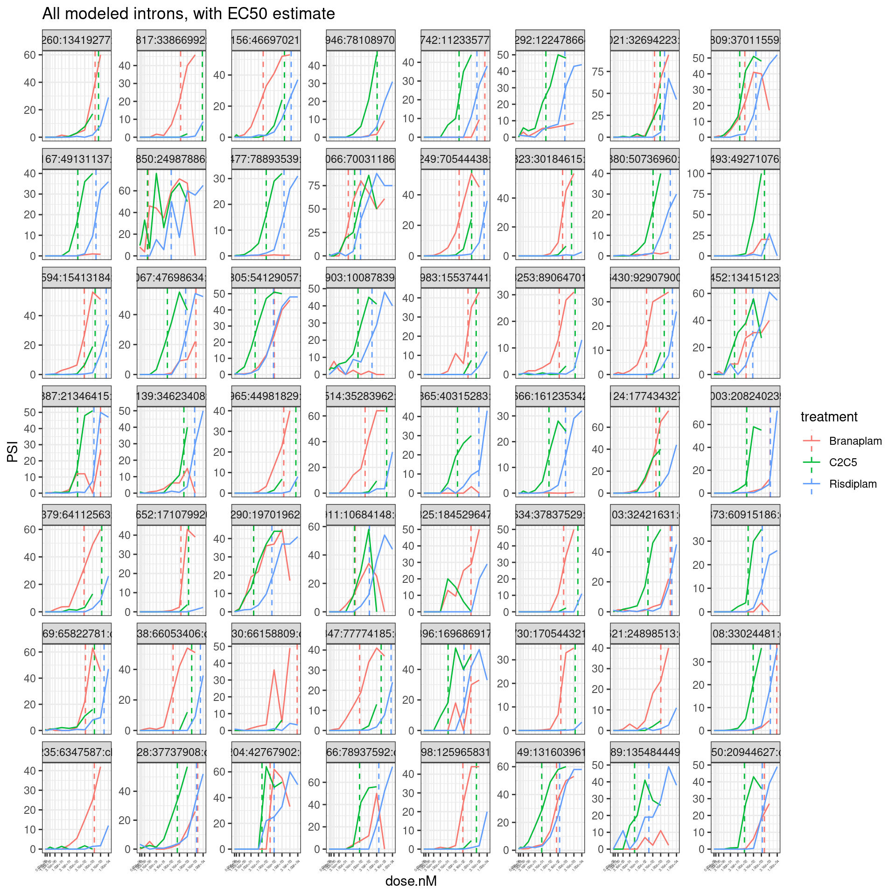
Ok, I think the EC50 estimates from the model fit match a my visual interpretation of the data… Let’s check that the difference in EC50 between molecules (eg \(EC50_{branaplam}-EC50_{risdiplam}\)) correlates with PC2.
ModelFits.Coefficients %>%
separate(param, into=c("param", "treatment"), sep=":") %>%
filter(param=="ED50") %>%
filter(treatment %in% c("Branaplam", "Risdiplam")) %>%
pivot_wider(names_from="treatment", values_from="estimate") %>%
mutate(LogDifference.EC50 = log2(Branaplam/Risdiplam)) %>%
inner_join(
pca.results.splicing$rotation %>%
as.data.frame() %>%
dplyr::select(PC2) %>%
rownames_to_column("junc"),
by="junc"
) %>%
ggplot(aes(x=LogDifference.EC50, y=PC2)) +
geom_point() +
theme_bw() +
labs(x="log2(EC50.Branaplam/EC50.Risdiplam", y="PC2 loading", title="PC2 as a proxy for drug-specific response)")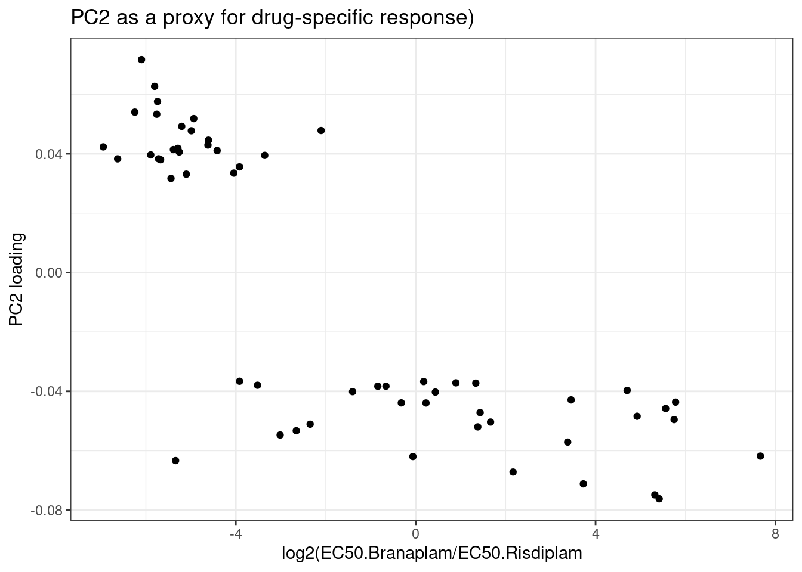
Ok, this demonstrates a subtle point I explained to Jingxin earlier. Because I center the PCA data, The PC2 loading might not reflect assyemtric effects… More specifically, here I just attempted to model and plot the top 100 and bottom 100 or so GA|GT novel cassette-exons by PC2 loading, while there is clearly a correlation between the differences in EC50 estimates, there are a lot of points with very negative PC2 loadings but the difference in EC50 is similar to those with the most positive PC2 loadings…
So now, finally, let’s select all the points in the top-left (that seem to be branaplam-specific) and some of the ones in the bottom right that appear risdiplam specific (looking at the EC50 estimates to make this determination) and plot them for manual inspection of the coverage data before sending a list of coordinates to Jingxin…
I somewhat arbitratly picked a threshold of a abs(log2 difference) > 5 (red points) for this further investigation:
InterestingJuncstions <- ModelFits.Coefficients %>%
separate(param, into=c("param", "treatment"), sep=":") %>%
filter(param=="ED50") %>%
filter(treatment %in% c("Branaplam", "Risdiplam")) %>%
pivot_wider(names_from="treatment", values_from="estimate") %>%
mutate(LogDifference.EC50 = log2(Branaplam/Risdiplam)) %>%
filter(abs(LogDifference.EC50) > 5 ) %>%
pull(junc)
ModelFits.Coefficients %>%
separate(param, into=c("param", "treatment"), sep=":") %>%
filter(param=="ED50") %>%
filter(treatment %in% c("Branaplam", "Risdiplam")) %>%
pivot_wider(names_from="treatment", values_from="estimate") %>%
mutate(LogDifference.EC50 = log2(Branaplam/Risdiplam)) %>%
inner_join(
pca.results.splicing$rotation %>%
as.data.frame() %>%
dplyr::select(PC2) %>%
rownames_to_column("junc"),
by="junc"
) %>%
mutate(JunctionToFollowUpOn = junc %in% InterestingJuncstions) %>%
ggplot(aes(x=LogDifference.EC50, y=PC2, color=JunctionToFollowUpOn)) +
geom_point() +
theme_bw() +
labs(x="log2(EC50.Branaplam/EC50.Risdiplam", y="PC2 loading", title="PC2 as a proxy for drug-specific response)")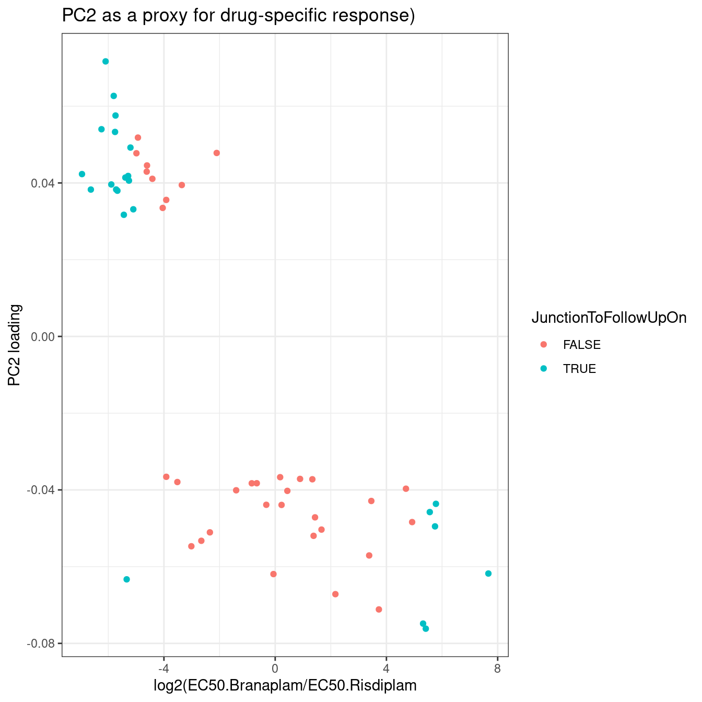
pca.results.splicing$rotation %>%
as.data.frame() %>%
dplyr::select(PC2) %>%
rownames_to_column("junc") %>%
inner_join(splicing.gagt.cassette.exons) %>%
filter(IntronType == "Alt 5'ss") %>%
dplyr::select(junc, PC2) %>%
inner_join(spearman.tests, by="junc") %>%
unnest(data) %>%
inner_join(
ModelFits.Coefficients %>%
separate(param, into=c("param", "treatment"), sep=":") %>%
filter(param=="ED50"),
by=c("junc", "treatment")) %>%
filter(junc %in% InterestingJuncstions) %>%
ggplot(aes(color=treatment)) +
geom_vline(
data = (. %>%
distinct(junc, treatment, estimate.y)),
aes(xintercept=estimate.y, color=treatment),
linetype='dashed') +
geom_line(aes(x=dose.nM, y=PSI)) +
scale_x_continuous(trans="log1p", limits=c(0, 10000), breaks=c(10000, 3160, 1000, 316, 100, 31.6, 10, 3.16, 1, 0.316, 0)) +
facet_wrap(~junc, scales = "free_y") +
labs(title="Introns to follow up on, with EC50 estimate") +
theme_bw() +
theme(axis.text.x = element_text(angle = 45, vjust = 1, hjust=1, size=3))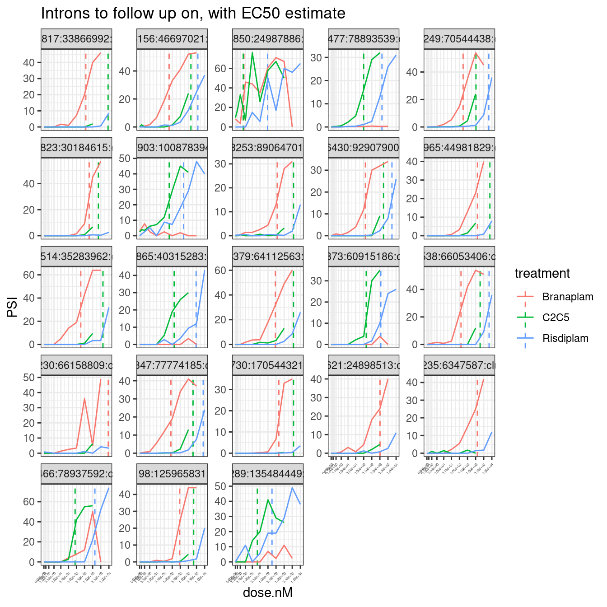
Ok, those look good… Now let’s plot the intron coverage for those 22 introns with my helper script:
data.frame(junc=InterestingJuncstions) %>%
separate(junc, into=c("chrom", "start", "stop", "cluster"), sep=":", remove=F, convert=T) %>%
inner_join(splicing.gagt.cassette.exons, by=c("junc", "start", "stop"="end")) %>%
dplyr::select(SpliceDonor) %>%
separate(SpliceDonor, into=c("chrom", "start", "strand"), sep="\\.", convert=T) %>%
mutate(end = start + 1) %>%
dplyr::select(chrom, start, end) %>%
write_tsv("../code/scratch/ToPlot.SpliceDonors.bed")
# write out pygenometracks ini file for GA|GT splice sites track
fileConn<-file("../code/scratch/ToPlot.SpliceDonors.ini")
writeLines(c("[vlines]","type = vlines", "file = scratch/ToPlot.SpliceDonors.bed"), con=fileConn)
close(fileConn)
data.frame(junc=InterestingJuncstions) %>%
separate(junc, into=c("chrom", "start", "stop", "cluster"), sep=":", remove=F, convert=T) %>%
inner_join(splicing.gagt.cassette.exons, by=c("junc", "start", "stop"="end")) %>%
dplyr::select(chrom, start, stop, junc, gene_names, SpliceDonor, UpstreamSpliceAcceptor) %>%
mutate(min=start-4000, max=stop+4000) %>%
mutate(cmd = str_glue("python scripts/GenometracksByGenotype/AggregateBigwigsForPlotting.py --GroupSettingsFile <(awk '$1 ~ /_u$/' bigwigs/BigwigList.groups.tsv ) --BigwigList bigwigs/BigwigList.tsv --Normalization WholeGenome --Region {chrom}:{min}-{max} --BigwigListType KeyFile --OutputPrefix scratch/ -vv --TracksTemplate scripts/GenometracksByGenotype/tracks_templates/GeneralPurposeColoredByGenotypeWithSupergroups.ini --Bed12GenesToIni scripts/GenometracksByGenotype/PremadeTracks/gencode.v26.FromGTEx.genes.bed12.gz\npyGenomeTracks --tracks <(cat scratch/tracks.ini scratch/ToPlot.SpliceDonors.ini) --out ../code/scratch/MoleculeSpecificJunctionsForJingxin_{chrom}_{start}_{stop}_ZoomInOnIntron.png --region {chrom}:{min}-{max} --trackLabelFraction 0.15\n\n")) %>%
dplyr::select(cmd) %>%
write.table("../code/testPlottingWithMyScript.ForJingxin3.sh", quote=F, row.names = F, col.names = F)After visually plotting the shortlist of 22 introns (mostly branaplam-specific introns, but some risdiplam-specific ones too), they mostly all look good, with a clear cassette exon as intended with a clear dose-response effect that seems different between treatments.
Here is one example risdiplam-specific example:
risdiplam-specific-example
And here is a branaplam-specific-example: 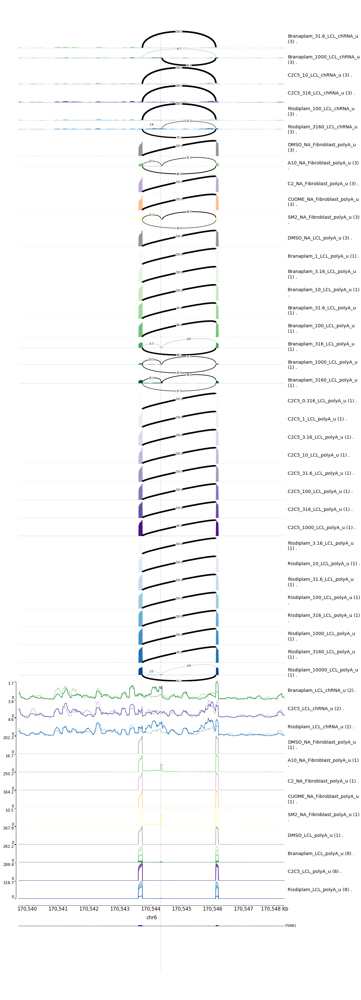
After manually inspecting all 22 examples, I feel confident about reporting most all of them to Jingxin EXCEPT the following:
In addition to the GA|GT intron coordinates, let me get coordinates for the upstream intron that is involved in the cassette exon inclusion… Also, I will plot each of these to share with Jingxin:
dat.for.jingxin <- data.frame(junc=InterestingJuncstions) %>%
separate(junc, into=c("chrom", "start", "stop", "cluster"), sep=":", remove=F, convert=T) %>%
inner_join(splicing.gagt.cassette.exons, by=c("junc", "start", "stop"="end")) %>%
dplyr::select(chrom, start, stop, junc, gene_names, SpliceDonor, UpstreamSpliceAcceptor) %>%
filter(!junc == "chr8:78936466:78937592:clu_17538_+")
#Get upstream intron that uses upstream splice acceptor. Select most splice junction with that acceptor
UpstreamIntrons <- all.samples.PSI %>%
mutate(Splice.Acceptor = case_when(
strand == "+" ~ paste(`#Chrom`, end, strand, sep="."),
strand == "-" ~ paste(`#Chrom`, start-2, strand, sep=".")
)) %>%
filter(Splice.Acceptor %in% dat.for.jingxin$UpstreamSpliceAcceptor) %>%
dplyr::select(junc, Splice.Acceptor, contains("LCL")) %>%
gather("Sample", "PSI", -junc, -Splice.Acceptor) %>%
group_by(junc, Splice.Acceptor) %>%
summarise(MeanPSI = mean(PSI, na.rm=T)) %>%
group_by(Splice.Acceptor) %>%
filter(MeanPSI == max(MeanPSI)) %>%
dplyr::select(UpstreamIntron_junc = junc, Splice.Acceptor)
dat.for.jingxin %>%
inner_join(UpstreamIntrons, by=c("UpstreamSpliceAcceptor"="Splice.Acceptor")) %>%
dplyr::select(junc, UpstreamIntron_junc) %>%
gather("Intron", "junction") %>%
separate(junction, into=c("chrom", "start", "stop", "cluster"), sep=":", remove=F, convert=T) %>%
dplyr::select(chrom, start, stop) %>%
write_tsv("../code/scratch/ToPlot.CassetteExonIntrons.bed")
data.frame(junc=InterestingJuncstions) %>%
separate(junc, into=c("chrom", "start", "stop", "cluster"), sep=":", remove=F, convert=T) %>%
inner_join(splicing.gagt.cassette.exons, by=c("junc", "start", "stop"="end")) %>%
dplyr::select(chrom, start, stop, junc, gene_names, SpliceDonor, UpstreamSpliceAcceptor) %>%
filter(!junc == "chr8:78936466:78937592:clu_17538_+") %>%
mutate(min=start-4000, max=stop+4000) %>%
mutate(cmd = str_glue("python scripts/GenometracksByGenotype/AggregateBigwigsForPlotting.py --GroupSettingsFile <(awk '$1 ~ /_u$/' bigwigs/BigwigList.groups.tsv ) --BigwigList bigwigs/BigwigList.tsv --Normalization WholeGenome --Region {chrom}:{min}-{max} --BigwigListType KeyFile --OutputPrefix scratch/ -vv --TracksTemplate scripts/GenometracksByGenotype/tracks_templates/GeneralPurposeColoredByGenotypeWithSupergroups.ini --Bed12GenesToIni scripts/GenometracksByGenotype/PremadeTracks/gencode.v26.FromGTEx.genes.bed12.gz --FilterJuncsByBed scratch/ToPlot.CassetteExonIntrons.bed\npyGenomeTracks --tracks <(cat scratch/tracks.ini scratch/ToPlot.SpliceDonors.ini) --out ../code/scratch/MoleculeSpecificJunctionsForJingxin_{chrom}_{start}_{stop}_ZoomInOnIntron.png --region {chrom}:{min}-{max} --trackLabelFraction 0.15\n\n")) %>%
dplyr::select(cmd) %>%
write.table("../code/testPlottingWithMyScript.ForJingxin4.sh", quote=F, row.names = F, col.names = F)
coordinates.for.Jingxin <- ModelFits.Coefficients %>%
separate(param, into=c("param", "treatment"), sep=":") %>%
filter(param=="ED50") %>%
filter(treatment %in% c("Branaplam", "Risdiplam")) %>%
pivot_wider(names_from="treatment", values_from="estimate", names_prefix="ED50.") %>%
dplyr::select(-param) %>%
inner_join(
pca.results.splicing$rotation %>%
as.data.frame() %>%
dplyr::select(PC2) %>%
rownames_to_column("junc"),
by="junc"
) %>%
inner_join(
dat.for.jingxin %>%
inner_join(UpstreamIntrons, by=c("UpstreamSpliceAcceptor"="Splice.Acceptor")) %>%
dplyr::select(junc, UpstreamIntron_junc),
by="junc"
)A final table for Jinxgin… The junc column is the coordinates of the GA|GT intron that is downstream of a cassette exon. The UpstreamIntron_junc is the coordinates for the intron that is upstream of the cassette exon. PC2, E50.Branaplam, and ED50.Risdiplam columns can be used to determine whether the intron is a branaplam or risdiplam specific intron. (Positive value for PC2 is branaplam-specific, negative value is risdiplam specific)
coordinates.for.Jingxin %>%
knitr::kable()| junc | ED50.Branaplam | ED50.Risdiplam | PC2 | UpstreamIntron_junc |
|---|---|---|---|---|
| chr22:35267514:35283962:clu_38658_+ | 1.849326e+02 | 1.266322e+04 | 0.0716840 | chr22:35265603:35267368:clu_38658_+ |
| chr17:30183823:30184615:clu_32603_+ | 6.114292e+02 | 3.419374e+04 | 0.0626867 | chr17:30181016:30183786:clu_32603_+ |
| chr2:64108379:64112563:clu_4503_- | 2.854982e+02 | 1.526872e+04 | 0.0575727 | chr2:64112672:64144081:clu_4503_- |
| chr11:33864817:33866992:clu_21326_- | 3.778691e+02 | 2.867140e+04 | 0.0540024 | chr11:33867062:33869346:clu_21326_- |
| chr5:66051538:66053406:clu_11009_+ | 1.249907e+02 | 6.765793e+03 | 0.0532961 | chr5:66050966:66051462:clu_11009_+ |
| chr9:125964198:125965831:clu_19202_+ | 2.909430e+02 | 1.072317e+04 | 0.0492261 | chr9:125963101:125964112:clu_19202_+ |
| chr5:66158230:66158809:clu_11012_+ | 9.114283e+03 | 1.124296e+06 | 0.0423121 | chr5:66153596:66158137:clu_11012_+ |
| chr6:170543730:170544321:clu_14498_- | 4.699538e+02 | 1.835148e+04 | 0.0418259 | chr6:170544366:170546103:clu_14498_- |
| chr7:6331235:6347587:clu_14603_- | 1.278253e+03 | 5.352122e+04 | 0.0414021 | chr7:6347688:6348573:clu_14603_- |
| chr16:70544249:70544438:clu_29930_+ | 1.687528e+02 | 6.457723e+03 | 0.0406110 | chr16:70541834:70544169:clu_29930_+ |
| chr11:46696156:46697021:clu_21372_- | 6.429295e+01 | 3.818470e+03 | 0.0396063 | chr11:46697069:46700551:clu_21372_- |
| chr7:24892621:24898513:clu_14672_- | 1.020153e+03 | 5.370671e+04 | 0.0382957 | chr7:24898721:24979886:clu_14672_- |
| chr5:77708347:77774185:clu_11981_- | 8.268344e+01 | 8.177769e+03 | 0.0382780 | chr5:77774217:77776205:clu_11981_- |
| chr20:44979965:44981829:clu_37255_+ | 1.296382e+03 | 6.614126e+04 | 0.0379764 | chr20:44978571:44979882:clu_37255_+ |
| chr1:89063253:89064701:clu_961_- | 3.759634e+02 | 1.290460e+04 | 0.0331346 | chr1:89064767:89065160:clu_961_- |
| chr1:92876430:92907900:clu_992_- | 1.276133e+02 | 5.546185e+03 | 0.0317005 | chr1:92908072:92961376:clu_992_- |
| chr5:60904873:60915186:clu_11901_- | 6.251732e+04 | 1.138005e+03 | -0.0436302 | chr5:60915286:60918265:clu_11901_- |
| chr22:40313865:40315283:clu_38757_+ | 1.409466e+05 | 2.990168e+03 | -0.0457782 | chr22:40312997:40313767:clu_38757_+ |
| chr15:78892477:78893539:clu_28125_+ | 7.232880e+04 | 1.346701e+03 | -0.0495066 | chr15:78892313:78892445:clu_28125_+ |
| chr9:135484289:135484449:clu_19406_+ | 3.615744e+04 | 1.780200e+02 | -0.0617951 | chr9:135484082:135484225:clu_19406_+ |
| chr14:24974850:24987886:clu_26455_- | 2.341491e+00 | 9.481943e+01 | -0.0633113 | chr14:24987972:25049878:clu_26455_- |
| chr1:100877903:100878394:clu_1036_- | 2.165152e+04 | 5.074846e+02 | -0.0761694 | chr1:100878447:100888753:clu_1036_- |
sessionInfo()R version 3.6.1 (2019-07-05)
Platform: x86_64-pc-linux-gnu (64-bit)
Running under: CentOS Linux 7 (Core)
Matrix products: default
BLAS/LAPACK: /software/openblas-0.2.19-el7-x86_64/lib/libopenblas_haswellp-r0.2.19.so
locale:
[1] LC_CTYPE=en_US.UTF-8 LC_NUMERIC=C LC_TIME=C
[4] LC_COLLATE=C LC_MONETARY=C LC_MESSAGES=C
[7] LC_PAPER=C LC_NAME=C LC_ADDRESS=C
[10] LC_TELEPHONE=C LC_MEASUREMENT=C LC_IDENTIFICATION=C
attached base packages:
[1] parallel stats4 stats graphics grDevices utils datasets
[8] methods base
other attached packages:
[1] GGally_1.4.0 broom_1.0.0 drc_3.0-1
[4] MASS_7.3-51.4 GenomicRanges_1.36.1 GenomeInfoDb_1.20.0
[7] IRanges_2.18.1 S4Vectors_0.22.1 BiocGenerics_0.30.0
[10] gplots_3.0.1.1 edgeR_3.26.5 limma_3.40.6
[13] forcats_0.4.0 stringr_1.4.0 dplyr_1.0.9
[16] purrr_0.3.4 readr_1.3.1 tidyr_1.2.0
[19] tibble_3.1.7 ggplot2_3.3.6 tidyverse_1.3.0
loaded via a namespace (and not attached):
[1] TH.data_1.1-1 colorspace_1.4-1 ellipsis_0.3.2
[4] rio_0.5.16 rprojroot_2.0.2 XVector_0.24.0
[7] fs_1.5.2 rstudioapi_0.14 farver_2.1.0
[10] fansi_0.4.0 mvtnorm_1.1-3 lubridate_1.7.4
[13] xml2_1.3.2 codetools_0.2-18 splines_3.6.1
[16] knitr_1.39 jsonlite_1.6 workflowr_1.6.2
[19] dbplyr_1.4.2 compiler_3.6.1 httr_1.4.4
[22] backports_1.4.1 assertthat_0.2.1 Matrix_1.2-18
[25] fastmap_1.1.0 cli_3.3.0 later_0.8.0
[28] htmltools_0.5.3 tools_3.6.1 gtable_0.3.0
[31] glue_1.6.2 GenomeInfoDbData_1.2.1 Rcpp_1.0.5
[34] carData_3.0-5 cellranger_1.1.0 vctrs_0.4.1
[37] gdata_2.18.0 xfun_0.31 openxlsx_4.1.0.1
[40] rvest_0.3.5 lifecycle_1.0.1 gtools_3.9.2.2
[43] zlibbioc_1.30.0 zoo_1.8-10 scales_1.1.0
[46] hms_0.5.3 promises_1.0.1 sandwich_3.0-2
[49] RColorBrewer_1.1-2 yaml_2.2.0 curl_3.3
[52] reshape_0.8.8 stringi_1.4.3 highr_0.9
[55] plotrix_3.8-2 caTools_1.17.1.2 zip_2.2.1
[58] rlang_1.0.5 pkgconfig_2.0.2 bitops_1.0-6
[61] evaluate_0.15 lattice_0.20-38 labeling_0.3
[64] tidyselect_1.1.2 plyr_1.8.4 magrittr_1.5
[67] R6_2.4.0 generics_0.1.3 multcomp_1.4-19
[70] DBI_1.1.0 pillar_1.7.0 haven_2.3.1
[73] foreign_0.8-71 withr_2.5.0 survival_2.44-1.1
[76] abind_1.4-5 RCurl_1.98-1.1 modelr_0.1.8
[79] crayon_1.3.4 car_3.0-5 KernSmooth_2.23-15
[82] utf8_1.1.4 rmarkdown_1.13 locfit_1.5-9.1
[85] grid_3.6.1 readxl_1.3.1 data.table_1.14.2
[88] git2r_0.26.1 reprex_0.3.0 digest_0.6.20
[91] httpuv_1.5.1 munsell_0.5.0